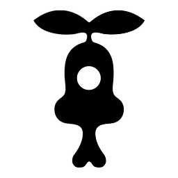

I'm Arman, a designer and project manager based in Montreal. I build things that live in two places at once: as objects you can hold, and as the digital worlds that make people want them.
My degree from Concordia in design and computer science, which meant learning 3D, UX/UI, web development, programming and game design in the same room. That range is the reason both of the projects on this site were built almost entirely in house.
Désiré is my independent luxury jewelry brand, built at the intersection of anime, gaming and alternative fashion. I model every piece in Blender, iterate with manufacturers through to finished sterling silver, enamel and moissanite, then shoot, render, animate, edit and write the campaigns that carry them. The storefront, the site, the social channels and the SEO are mine too. One person, full pipeline.
Alter-mode is a clothing repair and alterations initiative I founded at Brique par Brique, a nonprofit in Parc-Extension. Six editions in, it has raised thousands of dollars, upcycled hundreds of garments and earned coverage from CBC and CityNews. I handle the programming, partnerships, production and reporting, alongside the team of aunties whose skill is the whole reason it works.
Different scales, same instinct: work out what the thing actually needs, then learn how to make it.
Currently open to collaborations — armanfaruqui@hotmail.com.
Currently open to collaborations and commissions.